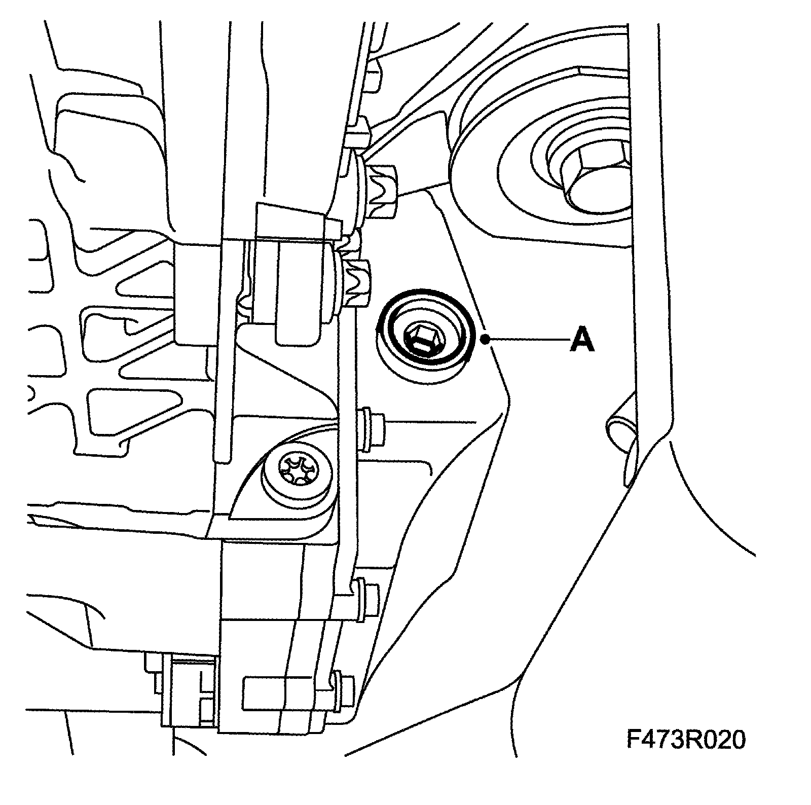
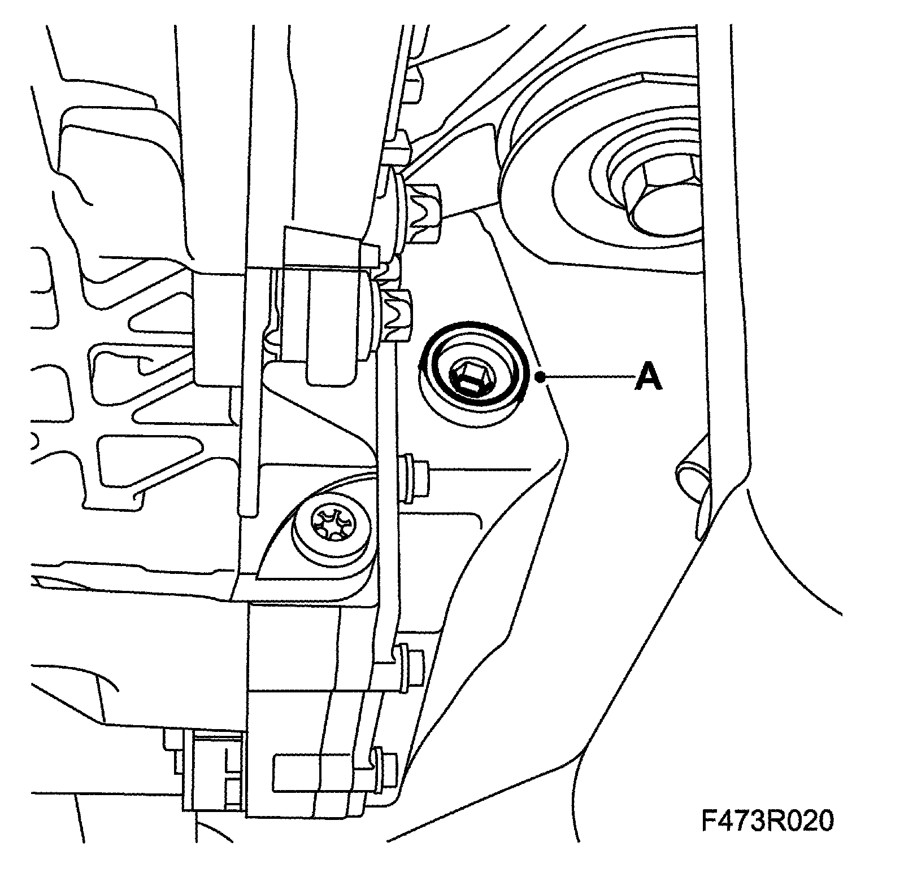
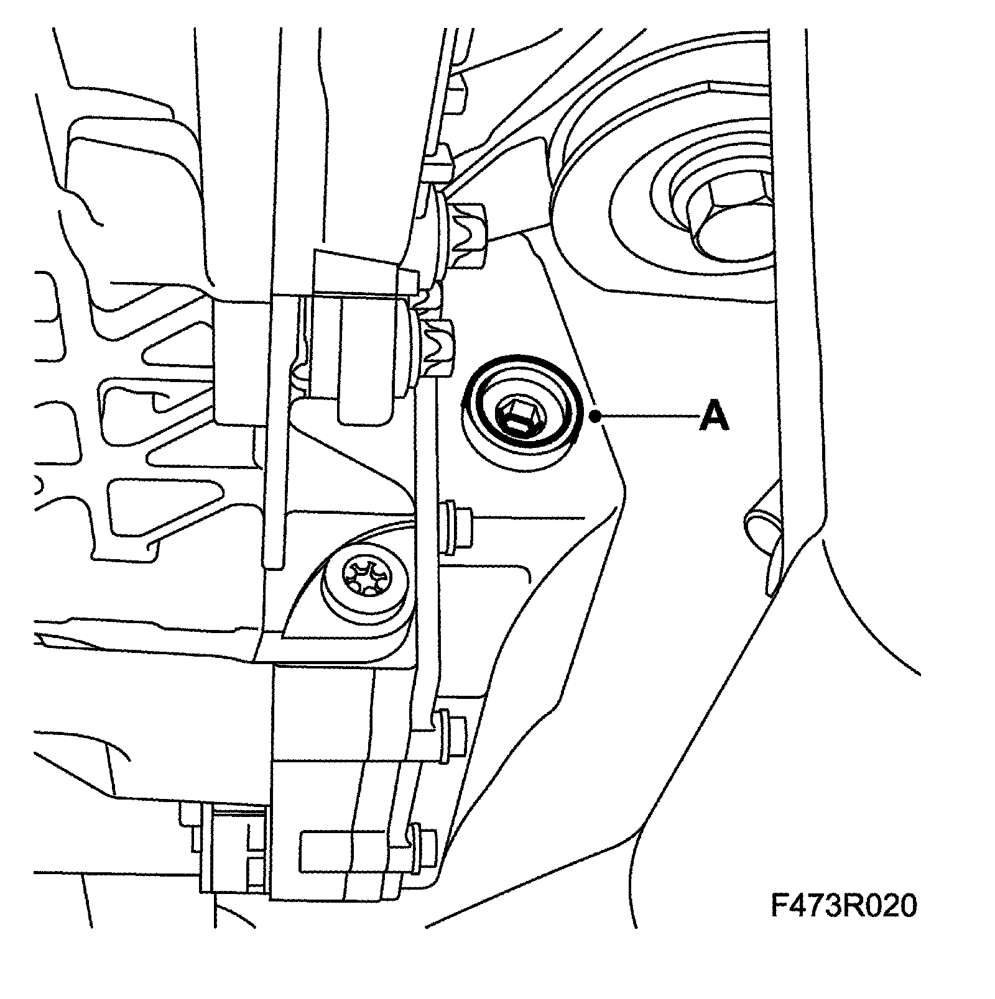

Differential Lock Hydraulic Fluid: Testing and Inspection
Checking/changing fluid in the differential clutchWarning: The hydraulic pressure in the differential clutch is very high. Wait or at least 10 minutes before removing any parts from the differential clutch.
Check
1. Run the engine at idling speed for 60 seconds to distribute the fluid. Switch off the engine.
Important: It is very important to observe maximum cleanliness when working on the differential clutch. Dirt particles can seriously damage the function and service life of the differential clutch.
2. Raise the car.
3. Remove the level plug (A).

4. Fill oil up to the edge, use a clean funnel and hose, see Fluid capacity and grade of fluid.
5. Fit the level plug (A).
Tightening torque 14 Nm (10.3 ft. lbs.)

6. Lower the car to the floor.
Changing
1. Raise the car.
Important: It is very important to observe maximum cleanliness when working on the differential clutch. Dirt particles can seriously damage the function and service life of the differential clutch.
2. Remove the differential clutch cover in accordance with Cover, differential clutch, replacement and drain the fluid.
3. Fit the cover with a new gasket.
4. Remove the level plug (A).

5. Fill with fluid up to the edge, use a clean funnel and hose.
6. Fit the level plug (A).
Tightening torque 14 Nm (10.3 ft. lbs.)
7. Lower the car to the floor.
8. Run the engine at idling speed for 60 seconds to distribute the fluid. Switch off the engine.
9. Raise the car.
10. Remove the level plug (A).
11. Fill with fluid up to the edge, use a clean funnel and hose.
12. Fit the level plug (A).
Tightening torque 14 Nm (10.3 ft. lbs.)
13. Lower the car to the floor.
For information on specifications and capacities, see Fluid type and capacity.